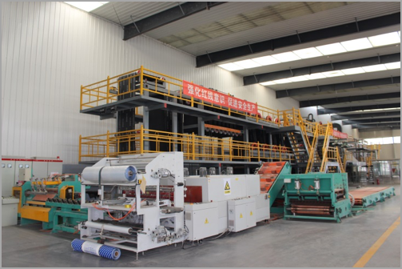
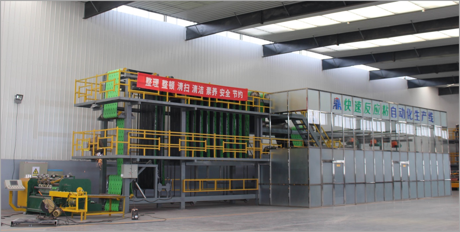
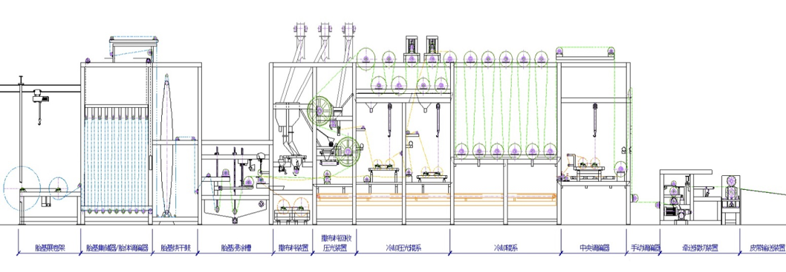

当前位置：
当前位置：
1）SBS改性沥青卷材生产线
辽宁九鼎宏泰防水科技有限公司SBS改性沥青防水卷材生产线成套生产装置，从原材料预处理到高聚物改性胶，卷材成型，沥青烟治理系列化生产全过程，均体现了技术先进，清洁文明的理念。年生产能力1000万㎡。生产线配置先进，制造精密，性能优良，功能齐全，高度智能化自动控制，整体水平与欧洲相当，关键工序代表了世界先进水平。

（1）成型线
本成型线设计车速2400-3000m/h，整线采用两台主电机宽域直流调速，同步性极强，卷材张力小且无波动，为卷材线上运行提供了可靠的技术保证。
在胎基快速浸透挤净，浸涂合一牵送系统，冷却支撑，厚度自动控制等工序，自动化程度是国内最先进水平。
①快速浸透挤净工序的先进性
采用特大压强切线挤压，配以无级变速自动调节，达到了瞬间浸透挤净的最佳运行效果。
②浸、涂合一的牵送系统
采用在不同温度、不同涂盖料厚度条件下，设置不同规格、数量调节器找回转差，再辅以无级变速旋转辊系，解决张力过大拉窄胎基的问题，此技术仍为国内独一。
③支撑式雾化水冷技术
我们发明了支撑式雾化水冷技术，彻底淘汰了常规水冷、空冷工艺，实现了高车速工况下未凝沥青胶面与辊面的有效隔离，且张力可随时调节，胎体居中，成为迄今为止的国内领先技术。
④卷材厚度自动控制系统
由已定型卷材厚度检测仪反馈的信号，经数据处理后，传入厚度调节器，与给定的厚度值进行比较，差值输入执行机构，实现卷材厚度的自动检测、计算、处理、执行、闭环调节，保证其厚度始终处于精确水平。
（2）国内最先进的沥青改性系统

①优异的高速剪切搅拌器
在400rpm螺旋板齿强力搅拌，195±5℃工况下，任意高聚物改性材料在额定的时间内均可充分溶解。
②高性能的胶体磨SBS溶入沥青的细度是改性过程的关键，我们应用公司胶体磨研磨均化、分散SBS等改性剂，使之在沥青中形成网状结构，确保改性效果。电机功率132KW，研磨流量40 m 3/h，磨齿间隙在0-1000微米间任意调节。
③高智能高精度的配料计量系统
拥有国内先进的元件装配的高智能化自控计量系统，是配料准确的硬件保证。采用先进可靠的电子计量监测设备，确保计量误差＜1‰，以实现与理论配全等。配料过程已完全由PCL机程控化，配料人员按人机配合要求输入理论配方后，便一切按设定程序进行，保证按工艺要求顺利成胶。
④全自动电脑配料
全自动电脑只能配料系统，避免了人工操作的不确定性，保证内在质量，使产品能够完全达到设计要求。
（3）高效达标的沥青烟治理系统
采用高压电捕、水喷淋沥青烟净化技术，可实现连续达标排放。环保监测站多次监测结果均在14.2－20.5mg／m 3 之间，大大低于40 mg／m 3 国家标准规定数值，属国内首创。
2）自粘卷材自动化生产线
① 制胶系统：沥青经加热后温度达到180℃，分别向反应釜中加入SBS橡胶改性剂、SBR增粘剂、橡胶填充油增塑剂、经胶体磨研磨1小时，然后升温到一定温度充分高速搅拌2小时后，加入填充料，再搅拌2小时，检验合格后，反应粘沥青胶制备成功，可进入预浸池和涂池。
② 成型机系统：制备好的反应粘沥青胶，经第一对压延辊浇筑，上、下表面同时分别覆以绿色强力交叉膜和硅油隔离膜，后进入冷却压光压实的传动系统，到卷材集储器，然后进行计量卷卷，包装、码垛。
3）产品生产工艺流程图
